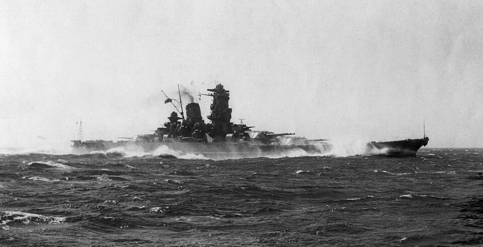
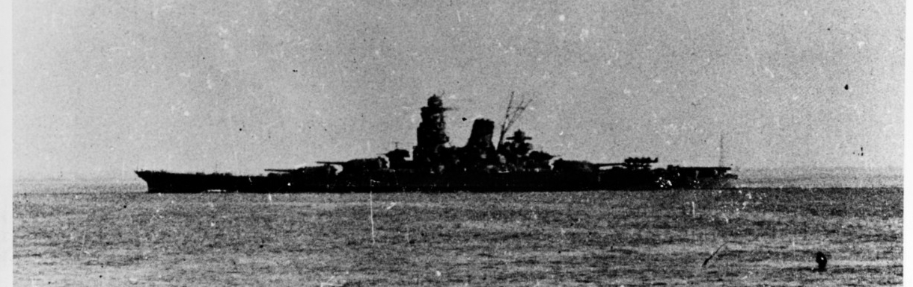
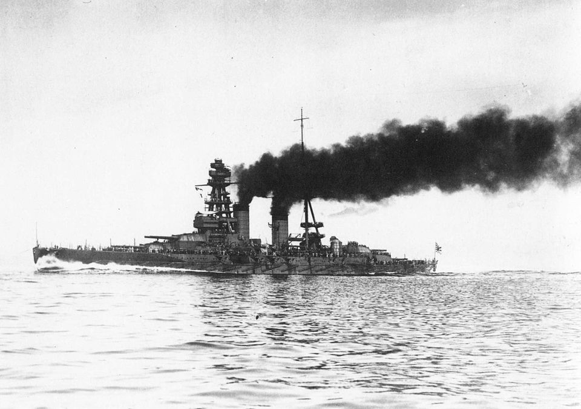
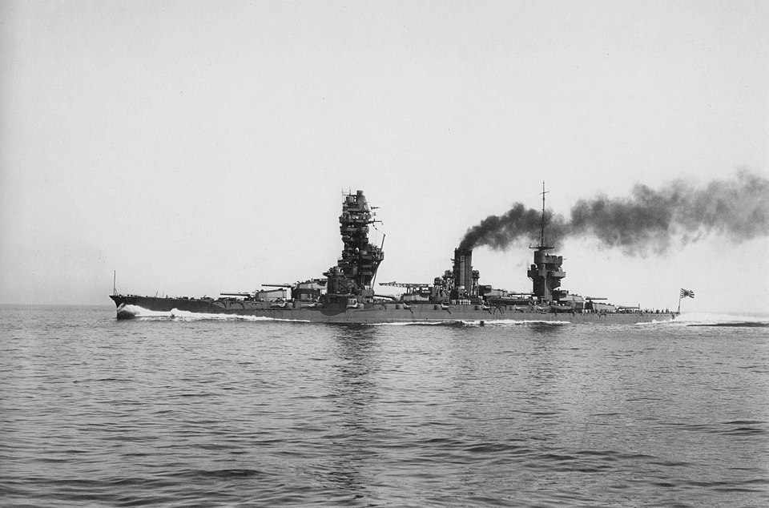

Yamato-class
Among the heaviest and most powerfully armed battleships ever constructed.

A compact visual guide to the IJN’s capital ships (1915–1945), featuring quick specs, class summaries, and imagery for Yamato, Musashi, Nagato, and Fusō.
Among the heaviest and most powerfully armed battleships ever constructed.

Commissioned 1942; formidable armor and 46 cm guns.

Fast, long-range—flagship at the outset of the Pacific War.

Distinctive pagoda masts; modernized inter-war.